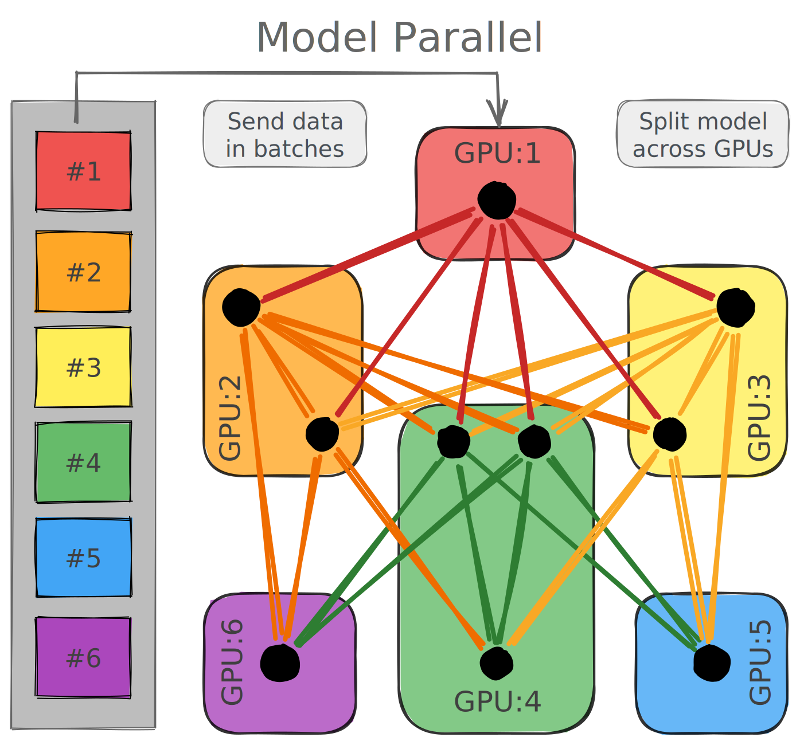
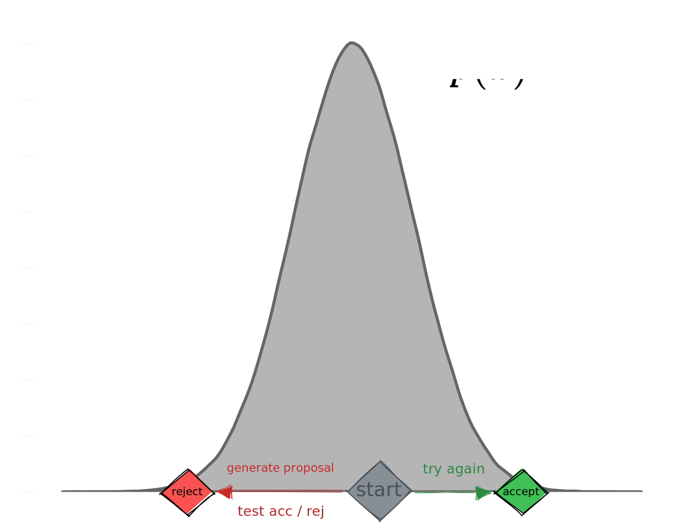

<!DOCTYPE html>
<html lang="en">
  <head>
    <meta charset="utf-8" />
    <meta name="viewport" content="width=device-width, initial-scale=1.0, maximum-scale=1.0, user-scalable=no" />

    <title>Scientific Data Science</title>
    <link rel="stylesheet" href="dist/reveal.css" />
    <link rel="stylesheet" href="dist/theme/black.css" id="theme" />
    <link rel="stylesheet" href="plugin/highlight/monokai.css" />
	<link rel="stylesheet" href="css/layout.css" />
	<link rel="stylesheet" href="plugin/customcontrols/style.css">
	<link rel="stylesheet" href="plugin/chalkboard/style.css">

    <link rel="stylesheet" href="css/custom.css" />

    <script defer src="dist/fontawesome/all.min.js"></script>

	<script type="text/javascript">
		var forgetPop = true;
		function onPopState(event) {
			if(forgetPop){
				forgetPop = false;
			} else {
				parent.postMessage(event.target.location.href, "app://obsidian.md");
			}
        }
		window.onpopstate = onPopState;
		window.onmessage = event => {
			if(event.data == "reload"){
				window.document.location.reload();
			}
			forgetPop = true;
		}

		function fitElements(){
			const itemsToFit = document.getElementsByClassName('fitText');
			for (const item in itemsToFit) {
				if (Object.hasOwnProperty.call(itemsToFit, item)) {
					var element = itemsToFit[item];
					fitElement(element,1, 1000);
					element.classList.remove('fitText');
				}
			}
		}

		function fitElement(element, start, end){

			let size = (end + start) / 2;
			element.style.fontSize = `${size}px`;

			if(Math.abs(start - end) < 1){
				while(element.scrollHeight > element.offsetHeight){
					size--;
					element.style.fontSize = `${size}px`;
				}
				return;
			}

			if(element.scrollHeight > element.offsetHeight){
				fitElement(element, start, size);
			} else {
				fitElement(element, size, end);
			}		
		}


		document.onreadystatechange = () => {
			fitElements();
			if (document.readyState === 'complete') {
				if (window.location.href.indexOf("?export") != -1){
					parent.postMessage(event.target.location.href, "app://obsidian.md");
				}
				if (window.location.href.indexOf("print-pdf") != -1){
					let stateCheck = setInterval(() => {
						clearInterval(stateCheck);
						window.print();
					}, 250);
				}
			}
	};


        </script>
  </head>
  <body>
    <div class="reveal">
      <div class="slides"><section  data-markdown><script type="text/template">

<div class="reset-margin" style="font-family: 'Inter',sans-serif; background-color: #303030; border-radius: 8px!important; padding: auto; align: center; position: absolute; left: 48px; top: 140px; height: 175px; min-height: 175px; width: 864px; display: flex; flex-direction: column; align-items: center; justify-content: space-evenly" >

# Scientific Data Science <!-- .element: style="font-family: 'Inter'; color: #F8F8F8" -->

#### An Emerging Symbiosis <!-- .element: style="color: #9e9e9e; font-family: 'Inter'; font-weight: 600" -->
</div>

<div class="reset-margin" style="line-height: 0.6em; position: absolute; left: 0px; top: 385px; height: 210px; min-height: 210px; width: 960px; display: flex; flex-direction: column; align-items: center; justify-content: flex-start" >

Sam Foreman <!-- .element: style="font-family: 'Inter'; font-size: 1.6em; font-weight: 500; line-height: 0.6; color: #E0E0E0!important; vertical-align: bottom!important" -->

May, 2022 <!-- .element: style="font-family: 'Nanum Pen Script'; font-size: 1.8em; color: #616161; vertical-align: top; font-weight: 400" -->
</div>

<div class="reset-margin flex-even" style="font-size: 1.5em; position: absolute; left: 0px; top: 630px; height: 70px; min-height: 70px; width: 960px; display: flex; flex-direction: row; align-items: center; justify-content: space-evenly" align="left">


<div class="block">

<!-- .element: style="margin-left: 2%; margin-bottom: 2%" -->

[<i class="fab fa-github"></i>](https://github.com/saforem2)
[<i class="fas fa-home"></i>](https://samforeman.me)
[<i class="fab fa-twitter"></i>](https://twitter.com/saforem2)

</div>


</div>

<div class="reset-margin" style="position: absolute; left: 672px; top: 490px; height: 210px; min-height: 210px; width: 288px; display: flex; flex-direction: column; align-items: flex-end; justify-content: flex-end" align="right">

</img>
</div>

<!-- .slide: class="drop" -->
</script></section><section  data-markdown><script type="text/template">
# Outline
1. [Issues with current scientific workflows](#Science%20Workflows)
    - [How ML can help](#Possibilities)
2. [Current Workflows](#Current%20Workflows)
3. [Advanced Workflows](#Advanced%20Workflows)
    - [MLOps](#MLOps), [Distributed Training](#Distributed%20Training), etc.
4. [Illustrative Example](#Identifying%20Phase%20Transitions%201%20https%20doi%20org%2010%201038%20nphys4035)
- [Current Research / Future Plans](#Anomalous%20Magnetic%20Moment%20of%20the%20Muon)
</script></section><section  data-markdown><script type="text/template">
# Science Workflows

<div class="block">

<!-- .element: style="font-size: 0.8em" -->

- Increasingly dependent on computing and data analysis / statistics
- **Issues**:
    - Science research is manually guided
        - This is slow! 
        - Depends on good ideas and large effort
    - Publications are static
    - Not all research code is public
    - Reproducibility?
    - Not always clear how to proceed
    - Error prone and labor-intensive
    
</div>


<p style="line-height: 0" class="reset-paragraph image-paragraph"></img></p>

</script></section><section  data-markdown><script type="text/template">
# 🤔 Current Issues 

- Research publications are static
    - Mistakes are inevitable
    - Reproducibility issues are common
    - Versioning
    - Which code version made which reports?
    
- Jupyter Notebooks
    - Better
    - Still must be manually ran, cell by cell
    - Useful as a "playground" for:
        - testing ideas,
        - debugging code
        - making / fine-tuning plots

- Can we do better?

<aside class="notes"><ul>
<li>FAIR</li>
<li>v1, v2.4, ..., v3-final-1, ...</li>
<li>Prone to human error</li>
<li>Dependencies evolve and become incompatible</li>
<li>Depends on users making</li>
<li>May not reflect most up-to-date changes</li>
</ul>
</aside></script></section><section  data-markdown><script type="text/template">
# Possibilities

- Better data `$\longrightarrow$` better science

- Dynamic resource management
    - Specialized hardware
    - AI Accelerators

- **Use ML to guide experiments**
    - Real-time data analysis
    - Predictive modeling
    - Advanced simulations
    - Heterogeneous architectures
    - Specialized hardware
    - AI Testbeds
    
<aside class="notes"><ul>
<li>Good idea</li>
<li>Seems promising</li>
<li>ML Still difficult</li>
<li>Barrier for entry</li>
<li>Difficulty getting started</li>
<li>Hard to ensure results</li>
<li>No working theory</li>
<li>Error prone</li>
<li>Unpredictable</li>
</ul>
</aside></script></section><section  data-markdown><script type="text/template">
# ML Workflow

<p style="line-height: 0" class="reset-paragraph image-paragraph"></img></p>


<div class="block">

<!-- .element: style="margin-left: 10%; margin-top: 5%; margin-right: 10%" class="note" -->

**Idea**: Automate this as much as possible and remove aspects prone to human error

</div>


<aside class="notes"></aside></script></section><section  data-markdown><script type="text/template">
# Current Workflows

- Try new architecture, play with hyperparameters, repeat
    - Largely still manually guided
    - ML Engineering
    
- Large "research institutes"
    -  DeepMind, FAIR / Meta, Nvidia, etc
    -  Hard to compete
    -  Access to large scale systems
    -  Iterative refinement of huge models
    -  Operate in parallel over grad students / postdocs

<p style="line-height: 0" class="reset-paragraph image-paragraph"></img></p>

</script></section><section  data-markdown><script type="text/template">
<!-- .slide: style="font-size: 0.9em" class="drop" -->

# Advanced Workflows

- Real-time data analysis
    - Used to guide / plan future experiments
    - Dynamic allocation of resources
        - Improved efficiency, less time spent idle
        - **More science per watts** [`[1]`](https://publications.anl.gov/anlpubs/2009/12/65724.pdf)

- Possible solutions?
    - Scaling up
    - New parallelism techniques?
    - Hyperparameter optimization, [DeepHyper](https://deephyper.org)
    - ML Ops tools / libraries
        - 🤗 [huggingface](https://huggingface.co)
        - [Weights & Biases]((https://wandb.ai)
        - [openai](https://openai.com)

<div class="horizontal_dotted_line reset-margin" style="position: absolute; left: 19.2px; top: 651px; height: 0px; min-height: 0px; width: 931.1999999999999px; display: flex; flex-direction: column; align-items: center; justify-content: flex-end" >

</div>

<div class="reset-margin" style="font-size: 80%; position: absolute; left: 0px; top: 665px; height: 35px; min-height: 35px; width: 960px; display: flex; flex-direction: column; align-items: center; justify-content: space-evenly" >


1. [Argonne Leadership Computing Facility • 2008 annual report](https://publications.anl.gov/anlpubs/2009/12/65724.pdf)

</div>

<aside class="notes"><p>APS Upgrade
Physics + ML</p>
<ul>
<li><p>Geometric Deep Learning</p>
<ul>
<li>Heavily influenced by symmetry considerations</li>
</ul>
</li>
<li><p>should be amenable to goemetric analysis</p>
</li>
<li><p>Relatively easy to prototype / try new models </p>
<ul>
<li>esp on toy problems</li>
</ul>
</li>
<li><p>Typically the refinement stage is most involved</p>
</li>
</ul>
</aside></script></section><section  data-markdown><script type="text/template">
<div class="block">

<!-- .element: style="font-size: 0.9em" align="center" -->

> Polaris is well equipped to help move the ALCF into the exascale era of computational science by accelerating the application of AI capabilities to the growing data and simulation demands of our users. **Polaris will also provide a broader opportunity to help prototype and test the integration of HPC with _real-time experiments and sensor networks_.**
>
> — Michael E. Papka, ALCF director [`[1]`](https://www.alcf.anl.gov/news/argonne-national-laboratory-and-hewlett-packard-enterprise-prepare-exascale-era-new-testbed) <!-- .element: align="" ="bottomright" -->

</div>


<div class="horizontal_dotted_line reset-margin" style="position: absolute; left: 48px; top: 581px; height: 0px; min-height: 0px; width: 864px; display: flex; flex-direction: column; align-items: center; justify-content: space-evenly" >

</div>
<div class="footer reset-margin" style="position: absolute; left: 28.799999999999997px; top: 595px; height: 70px; min-height: 70px; width: 864px; display: flex; flex-direction: column; align-items: flex-start; justify-content: space-evenly" align="left">

<div class="block">

1. [Argonne National Laboratory and Hewlett Packard Enterprise prepare for exascale era with new testbed supercomputer Argonne Leadership Computing Facility](https://www.alcf.anl.gov/news/argonne-national-laboratory-and-hewlett-packard-enterprise-prepare-exascale-era-new-testbed)

</div>


</div>

<!-- .slide: class="drop" -->
</script></section><section  data-markdown><script type="text/template">
# Alternatives?

- Dynamic reports:
    - Grow and change over time (**alive**)
    - Present results **with context** seamlessly
    - Central hub for team
    - Arbitrarily customizable
    - Live-updating
    - Having dynamic "reports" that can grow and change

- Experiment tracking
    - [TensorBoard](https://tensorboard.org)
    - [Weights and Biases](https://wandb.ai)
    - [Neptune](https://neptune.ai/product)
    - [Comet](https://www.comet.ml/site/data-scientists/)

<aside class="notes"><ul>
<li>Empirical DL research + Scientific Research could be more effective with reports that are alive &amp; with researchers adding to it</li>
<li>Make sense of the countless recipes researchers have and move towards systematizing these ideas</li>
<li>For DataScience team @ ALCF:<ul>
<li>Centralized hub for:<ul>
<li>Storing and versioning models from multiple projects</li>
<li>displaying real-time machine performance</li>
</ul>
</li>
</ul>
</li>
<li>Share ideas / models with team<ul>
<li>Borrowing / fine tuning</li>
</ul>
</li>
</ul>
</aside></script></section><section  data-markdown><script type="text/template">
<div class="reset-margin" style="margin-top: 10%; position: absolute; left: 240px; top: 0px; height: 140px; min-height: 140px; width: 480px; display: flex; flex-direction: column; align-items: center; justify-content: space-evenly" >

 # 📊 ML Ops
</div>

<div class="note has-light-background reset-margin" style="text-align: left; background-color: #66bb6a; position: absolute; left: 192px; top: 262.5px; height: 175px; min-height: 175px; width: 576px; display: flex; flex-direction: column; align-items: center; justify-content: space-evenly" >


**Goal**: Allow researchers to focus on their science / model development without all the boilerplate.

</div>

<!-- .slide: class="drop" -->
</script></section><section  data-markdown><script type="text/template">
<!-- .slide: class="has-light-background drop" data-background-color="white" -->

### MLOps

<div class="reset-margin" style="position: absolute; left: 0px; top: 56px; height: 644px; min-height: 644px; width: 960px; display: flex; flex-direction: column; align-items: center; justify-content: space-evenly" >


<iframe id="mlops" width="100%" height="100%" data-src="https://www.mlops.toys" data-preload data-background-interactive></iframe>

</div>
</script></section><section  data-markdown><script type="text/template">
<!-- .slide: class="has-light-background drop" data-background-color="white" -->
<div class="reset-margin" style="position: absolute; left: 0px; top: 0px; height: 700px; min-height: 700px; width: 960px; display: flex; flex-direction: column; align-items: center; justify-content: space-evenly" >

<iframe width="100%" height="100%" data-src="https://wandb.ai/l2hmc-qcd/l2hmc-qcd/reports/L2HMC-Report-04-04-2022---VmlldzoxNzgzODcx" style="border:none;width:100%" data-preload data-background-interactive></iframe>
</div>
</script></section><section  data-markdown><script type="text/template">
### Distributed Training

<p style="line-height: 0" class="reset-paragraph image-paragraph"></img></p>

</script></section><section  data-markdown><script type="text/template">
 # Distributed Training

 <div class="reset-margin" style="position: absolute; left: 0px; top: 105px; height: 700px; min-height: 700px; width: 460.79999999999995px; display: flex; flex-direction: column; align-items: flex-start; justify-content: flex-start" align="left">


<p style="line-height: 0" class="reset-paragraph image-paragraph"></img></p>

 </div>

 <div class="reset-margin" style="position: absolute; left: 384px; top: 105px; height: 700px; min-height: 700px; width: 576px; display: flex; flex-direction: column; align-items: flex-end; justify-content: flex-start" align="right">


<p style="line-height: 0" class="reset-paragraph image-paragraph"></img></p>

 </div>

<!-- .slide: class="drop" -->
</script></section><section  data-markdown><script type="text/template">
<div class="note reset-margin" style="position: absolute; left: 72px; top: 210px; height: 280px; min-height: 280px; width: 816px; display: flex; flex-direction: column; align-items: center; justify-content: space-evenly" >

# Ongoing work
</div>

<!-- .slide: class="drop" -->
</script></section><section  data-markdown><script type="text/template">
# Standard Model

<div class="reset-margin" style="font-size: 0.8em; position: absolute; left: 48px; top: 105px; height: 280px; min-height: 280px; width: 480px; display: flex; flex-direction: column; align-items: flex-start; justify-content: flex-start" align="left">

- Electricity & Magnetism, Strong and Weak Interactions, elementary particles


- (Lattice) QCD:
    - Theory of the **strong** interactions between quarks and gluons
    - ❌ Analytically intractable 
    - ✅ Discretize space-time onto lattice
</div>

<div class="reset-margin" style="position: absolute; left: 528px; top: 105px; height: 210px; min-height: 210px; width: 288px; display: flex; flex-direction: column; align-items: flex-end; justify-content: flex-start" align="right">

<p style="line-height: 0" class="reset-paragraph image-paragraph"></img></p>

</div>

<div class="reset-margin stretch-column" style="margin-top: 10%; position: absolute; left: 0px; top: 350px; height: 350px; min-height: 350px; width: 960px; display: flex; flex-direction: column; align-items: center; justify-content: space-evenly" >

<p style="line-height: 0" class="reset-paragraph image-paragraph"></img></p>

</div>

<aside class="notes"><ol>
<li>Background / Interesting Work<ul>
<li>Why its interesting?</li>
<li>What I&#39;ve learned</li>
<li>What aspects are relevant outside of domain expertise</li>
</ul>
</li>
<li>Ongoing Work<ul>
<li>Lattice QCD</li>
<li>Common history with HPC</li>
<li>Mutually beneficial</li>
</ul>
</li>
<li>Plans for future research</li>
</ol>
<!-- .slide: class="drop" --></aside></script></section><section  data-markdown><script type="text/template">
<section data-background-video-loop data-background-video-muted data-background-video="https://d2r55xnwy6nx47.cloudfront.net/uploads/2021/04/Muon_2560_Lede.mp4">

<div class="block">

<!-- .element: style="color: #EEEEEE; vertical-align: center; margin-top: 10%; text-shadow: 0px 0px 10px black" -->

#### Anomalous Magnetic Moment of the Muon<sup id="fnref:quanta" role="doc-noteref">1</sup>

</div>


<div class="note reset-margin" style="position: absolute; left: 288px; top: 280px; height: 140px; min-height: 140px; width: 384px; display: flex; flex-direction: column; align-items: center; justify-content: space-evenly" >

`$a_{\mu} = \frac{(g_{\mu} - 2)}{2}$` <!-- .element: style="color: #EEEEEE; font-size: 1.5em; text-shadow: 0px 0px 10px black" -->
</div>

<div class="reset-margin" style="text-align: center; position: absolute; left: 0px; top: 420px; height: 280px; min-height: 280px; width: 960px; display: flex; flex-direction: column; align-items: center; justify-content: space-evenly" >


#### New physics? <!-- .element: style="color: #f8f8f8; vertical-align: center; margin-top: 10%; text-shadow: 0px 0px 10px black" -->
</div>
    
<div class="block">

<!-- .element: class="footer" -->
    
    
[‘Last Hope’ Experiment Finds Evidence for Unknown Particles  Quanta Magazine](https://www.quantamagazine.org/last-hope-experiment-finds-evidence-for-unknown-particles-20210407/)
    

    
</div>


</section>


<aside class="notes"><p>muon g-2</p>
<!-- .slide: class="drop" -->

<div class="footnotes" role="doc-endnotes">
<ol>
</ol>
</div></aside></script></section><section  data-markdown><script type="text/template">
<!-- .slide: style="text-align: left; font-size: 1.1em" class="drop" -->

### Muon `$g-2$` from Lattice QCD

- From BNL [`[1]`](https://arxiv.org/abs/2002.12347):

<div class="block">

<!-- .element: style="text-align: center!important; margin-left: 10%; margin-right: 10%; border: 1px solid white; margin-top: 5%; margin-bottom: 5%" class="note" align="center" -->

`$$a_{\mu}^{\mathrm{exp}} = 11659209.1(5.4)(3.3)\times 10^{-10}$$`

</div>


- Hunt for Beyond Standard Model (BSM) physics
    - Upcoming experiments at Fermilab and JPARC aim to reduce uncertainty by factor of four

<div class="horizontal_dotted_line reset-margin" style="position: absolute; left: 48px; top: 574px; height: 0px; min-height: 0px; width: 864px; display: flex; flex-direction: column; align-items: center; justify-content: space-evenly" >

</div>
<div class="footer reset-margin" style="position: absolute; left: 28.799999999999997px; top: 595px; height: 70px; min-height: 70px; width: 864px; display: flex; flex-direction: column; align-items: flex-start; justify-content: space-evenly" align="left">

<div class="block">

1. Leading hadronic contribution to the muon magnetic moment from lattice QCD [arXiv:2002.12347](https://arxiv.org/abs/2002.12347)

</div>


</div>

<aside class="notes"><ul>
<li>Lattice QCD historically has been in lock-step with developments in HPC</li>
</ul>
</aside></script></section><section  data-markdown><script type="text/template">
# Contributions

- Calculate using first principles from Lattice QCD (LQCD)
- LQCD _may_ be able to resolve the current tension between the standard models' experiments and predictions

<p style="line-height: 0" class="reset-paragraph image-paragraph"></img></p>


<split even>
<div class="block">

<!-- .element: style="margin-right: 10%; margin-left: 2%; font-size: 0.8em" class="note" align="top" -->

<u>**One Photon Correction**</u> <!-- .element: style="color: #888888" -->

`$\mu$` emits and reabsorbs a virtual photon (largest effect) 

</div>


<div class="block">

<!-- .element: style="margin-right: 2%; font-size: 0.8em" class="note" -->

<u>**Hadronic Vacuum Polarization**</u> <!-- .element: style="color: #888888" -->

Virtual photon splits into (anti)-hadron pair (quarks, hard to calculate)

</div>


</split>

<aside class="notes"><ul>
<li>Hadronic Vacuum Polarization (HVP) Contribution</li>
<li>The blobs (quark loops) represent all possible intermediate hadronic states (<code>$\rho$</code>, <code>$\pi\pi$</code>, <code>$\ldots$</code>)<ul>
<li>Not calculable in perturbation theory</li>
</ul>
</li>
<li>Can be calculated from:<ul>
<li>First principles using <strong>lattice QCD</strong>
<code>$$a_{\mu}(\mathrm{HVP}) = \left(\frac{\alpha}{\pi}\right)^{2}\int_{0}^{\infty} dq^{2}\, f(q^{2}) \hat{\Pi}(q^{2})$$</code> <!-- .element: style="text-align: center!important" --></li>
</ul>
</li>
</ul>
</aside></script></section><section  data-markdown><script type="text/template">
## Lattice QCD

<div class="block">

<!-- .element: style="border: 1px solid #66BB6A; background-color: #66BB6A" class="note has-light-background" -->

  1. **Gauge Field Generation**: Use Markov Chain Monte Carlo (MCMC) methods for sampling _independent_ gauge field (gluon) configurations. 

</div>


  2. **Propagator calculations**: Compute how quarks propagate in these fields
     (_quark propagators_)
  3. **Contractions**: Method for combining quark propagators into correlation
     functions and observables.

<aside class="notes"><ul>
<li>Calculations in LatticeQCD proceed in 3 steps:</li>
<li>Non-perturbative approach to solving the QCD theory of the strong interaction between quarks and gluons.</li>
</ul>
</aside></script></section><section  data-markdown><script type="text/template">
# More statistics!

- Lattice QCD _may_ help resolve this tension
- Currently limited by computing power
- New algorithms + ML seem promising...
- See [`[1]`](https://arxiv.org/abs/2202.05838) for a broad overview of prospects

<div class="horizontal_dotted_line reset-margin" style="position: absolute; left: 0px; top: 609px; height: 0px; min-height: 0px; width: 960px; display: flex; flex-direction: column; align-items: center; justify-content: flex-end" >

</div>

<div class="footer reset-margin" style="position: absolute; left: 0px; top: 630px; height: 70px; min-height: 70px; width: 960px; display: flex; flex-direction: column; align-items: flex-start; justify-content: flex-start" align="left">


1. [Applications of Machine Learning to Lattice Quantum Field Theory arXiv:2202.05838](https://arxiv.org/abs/2202.05838)
</div>

<aside class="notes"><ul>
<li>LQCD may help resolve the existing tension between the standard model predictions and experiments</li>
<li>For many key applications the necessary LQCD calculations are limited by available computing resources</li>
</ul>
<!-- .slide: class="drop" --></aside></script></section><section  data-markdown><script type="text/template"><!-- .slide: style="vertical-align: center" class="drop" -->

# BMW Collaboration

<div class="reset-margin" style="position: absolute; left: 0px; top: 0px; height: 700px; min-height: 700px; width: 960px; display: flex; flex-direction: column; align-items: center; justify-content: space-evenly" >

<p style="line-height: 0" class="reset-paragraph image-paragraph"></img></p>

</div>

<div class="horizontal_dotted_line reset-margin" style="position: absolute; left: 19.2px; top: 623px; height: 0px; min-height: 0px; width: 931.1999999999999px; display: flex; flex-direction: column; align-items: center; justify-content: flex-end" >

</div>
<div class="reset-margin" style="font-size: 80%; position: absolute; left: 19.2px; top: 630px; height: 70px; min-height: 70px; width: 931.1999999999999px; display: flex; flex-direction: column; align-items: flex-start; justify-content: flex-start" align="left">


<div class="block">

<!-- .element: class="footer" -->

2. The JUWELS supercomputer at the Jülich Research Center in Germany, used to calculate the anomalous magnetic moment of the muon

</div>


</div>
</script></section><section  data-markdown><script type="text/template">
## LQCD @ ALCF (2008)

<div class="reset-margin" style="font-size: 0.8em; text-align: left!important; position: absolute; left: 96px; top: 87.5px; height: 525px; min-height: 525px; width: 768px; display: flex; flex-direction: column; align-items: center; justify-content: space-evenly" >

> The **Blue Gene/P** at the ALCF has tremendously accelerated the generation of the gauge configurations—in many cases, by a factor of 5 to 10 over what has been possible with other machines.
> Significant progress has been made in simulations with two different implementations of the quarks—domain wall and staggered. [`[1]`](https://publications.anl.gov/anlpubs/2009/12/65724.pdf)
</div>

<div class="horizontal_dotted_line reset-margin" style="position: absolute; left: 19.2px; top: 623px; height: 0px; min-height: 0px; width: 931.1999999999999px; display: flex; flex-direction: column; align-items: center; justify-content: flex-end" >

</div>

<div class="reset-margin" style="font-size: 80%; position: absolute; left: 19.2px; top: 630px; height: 70px; min-height: 70px; width: 931.1999999999999px; display: flex; flex-direction: column; align-items: flex-start; justify-content: flex-start" align="left">


1. [Argonne Leadership Computing Facility • 2008 annual report](https://publications.anl.gov/anlpubs/2009/12/65724.pdf)

</div>

<!-- .slide: class="drop" -->
</script></section><section  data-markdown><script type="text/template">
# <a href="https://www.github.com/saforem2/l2hmc-qcd"><i class="fab fa-github" ></i></a> `l2hmc-qcd`
    
<div class="block">

<a href="https://pytorch.org/get-started/locally/"></a> <a href="https://hydra.cc"></a> <a href="https://www.tensorflow.org"></a> 
<br>
<a href="https://arxiv.org/abs/2112.01582"></a> <a href="https://arxiv.org/abs/2105.03418"></a> 
<br>
<a href="https://github.com/saforem2/l2hmc-qcd/"></a> <a href="https://www.codefactor.io/repository/github/saforem2/l2hmc-qcd"></a>
<br>
<a href="https://hits.seeyoufarm.com"></a>
<br>

</div>


</script></section><section  data-markdown><script type="text/template">
#### Markov Chain Monte Carlo (MCMC)

`$$x \sim \mathcal{N}(0, \mathbb{1})$$`
<p style="line-height: 0" class="reset-paragraph image-paragraph"></img></p>

</script></section><section  data-markdown><script type="text/template">
<div class="note reset-margin" style="position: absolute; left: NaNpx; top: 0px; height: 105px; min-height: 105px; width: undefinedpx; display: flex; flex-direction: column; align-items: flex-end; justify-content: flex-start" align="right">

</div>

<div class="reset-margin flex-even" style="position: absolute; left: 0px; top: 35px; height: 280px; min-height: 280px; width: 960px; display: flex; flex-direction: row; align-items: center; justify-content: space-evenly" >

**Markov Chain Monte Carlo** (MCMC)<br> [`[slide w/ src]`](#Metropolis-Hastings%20in%20Python) <!-- .element: style="text-align: center!important" align="left" -->

<p style="line-height: 0" class="reset-paragraph image-paragraph"></img></p>

<p style="line-height: 0" class="reset-paragraph image-paragraph"></img></p>

</div>
<div class="reset-margin flex-even" style="position: absolute; left: 0px; top: 420px; height: 210px; min-height: 210px; width: 960px; display: flex; flex-direction: row; align-items: center; justify-content: space-evenly" >

<p style="line-height: 0" class="reset-paragraph image-paragraph"></img></p>

<p style="line-height: 0" class="reset-paragraph image-paragraph"></img></p>

</div>
</grid>


<!-- .slide: class="drop" -->
</script></section><section  data-markdown><script type="text/template">
<!-- .slide: style="text-align: center" class="drop" -->

### Hamiltonian Monte Carlo (HMC)

<div class="note reset-margin" style="font-size: 1.5em; margin-bottom: 20%; position: absolute; left: 316.8px; top: 105px; height: 189px; min-height: 189px; width: 307.2px; display: flex; flex-direction: column; align-items: center; justify-content: space-evenly" >

`$$\begin{align}
    \dot{x} &= +\partial_{v} H \\
    \dot{v} &= - \partial_{x} H 
\end{align}$$`
</div> 

<div class="reset-margin stretch-column" style="position: absolute; left: 0px; top: 280px; height: 700px; min-height: 700px; width: 960px; display: flex; flex-direction: column; align-items: center; justify-content: space-evenly" >

<p style="line-height: 0" class="reset-paragraph image-paragraph"></img></p>

</div>
</script></section><section  data-markdown><script type="text/template">
<section data-background-iframe="https://chi-feng.github.io/mcmc-demo/app.html" data-background-interactive></section>

<div class="reset-margin" style="position: absolute; left: 384px; top: 280px; height: 140px; min-height: 140px; width: 192px; display: flex; flex-direction: column; align-items: center; justify-content: space-evenly" >


# HMC<sup id="fnref:hmc" role="doc-noteref">1</sup><!-- .element: style="text-shadow: 0px 0px 10px black" -->
</div>


<!-- .slide: class="drop" -->

<div class="footnotes" role="doc-endnotes">
<ol>
</ol>
</div>
</script></section><section  data-markdown><script type="text/template">
# Issues with HMC

<p style="line-height: 0" class="reset-paragraph image-paragraph"></img></p>

<p style="line-height: 0" class="reset-paragraph image-paragraph"></img></p>

</script></section><section  data-markdown><script type="text/template">
### `l2hmc`: LeapfrogLayer

</img>
</img>
</img>

</script></section><section  data-markdown><script type="text/template">
# L2HMC

<p style="line-height: 0" class="reset-paragraph image-paragraph"></img></p>


<aside class="notes"><ul>
<li>Generic MCMC algorithm, designed to encourage efficient exploration of target space</li>
</ul>
</aside></script></section><section  data-markdown><script type="text/template">
# Critical Slowing Down 

<div class="block">

<!-- .element: style="font-size: 1.25em; line-height: 1.75em" -->

<div id="left" style="width: 45%; font-size: 100%;text-align:left;align:left;margin-left:25pt;margin-top:20pt;font-size:1.1em;">

<h6><span id="note" style="color:rgb(123,159,249);background-color:rgba(123,159,249,0.15);border-radius:8px;margin-left:10%;margin-top:2%;">Charge Freezing</span></h6>

- <span style="color:rgb(192,212,245);font-weight:600;">`$Q$` gets stuck!

<br>

- <span style="color:rgb(242, 203, 183);">`$\delta Q \longrightarrow 0$`</span> <span style="color:rgb(242, 203, 183);"> </span>

<br>

- <span style="color:rgb(238, 132, 104);">need to wait `$N_{\mathrm{configs}}\longrightarrow \infty$`</span>

<br><span id="note" style="color:rgb(255,82,82);background-color:rgba(255,82,82,0.15);padding:10px;margin-left:20%;border-radius:8px;align:center;">
`$\tau_{\mathrm{int}}^{Q} \longrightarrow \infty$`
</span>
</div>
<div id="right" style="align:right;">

</div>
</div>

</div>


</script></section><section  data-markdown><script type="text/template">
## Comparison

<div class="block">

<!-- .element: style="font-size: 0.9em" -->

- To calculate averages, we drop the first `$\sim 25\\%$` of chains (thermalize), and average

`$$\langle \delta Q_{\mathbb{Z}}\rangle = \frac{1}{N_{b}}\sum_{n=1}^{N_{b}}\bigg\{\frac{1}{M}\sum_{m=1}^{M} \left|Q'_{\mathbb{Z}} - Q_{\mathbb{Z}}\right|\bigg\}$$`

</div>


<split even>

<p style="line-height: 0" class="reset-paragraph image-paragraph"></img></p>

<p style="line-height: 0" class="reset-paragraph image-paragraph"></img></p>

</split>

<div class="block">

<!-- .element: class="footer" -->

Comparison of the tunneling rate between trained model (left) and HMC (right) (**Note**: Higher is better)

</div>


</script></section><section  data-markdown><script type="text/template">
### HMC Sweep

<div class="block">

<!-- .element: style="font-size: 0.75em!important; margin-bottom: -3%" -->

- Run HMC Sweep with `$N_{\mathrm{LF}}=16$` on `$16\times16$` lattice at `$\beta = 4$`

- **Goal**: Maximize `$\delta Q_{\mathbb{Z}} = f(N_{\mathrm{LF}}, \textcolor{#66bb6a}{\varepsilon})$`  over _thermalized_ configs
    - Fix `$N_{\mathrm{LF}}$`
    - Sweep over `$\textcolor{#66bb6a}\varepsilon$`

</div>


<p style="line-height: 0" class="reset-paragraph image-paragraph"></img></p>

</script></section><section  data-markdown><script type="text/template">
<!-- .slide: class="has-light-background drop" data-background-color="white" -->
<div class="reset-margin" style="position: absolute; left: 0px; top: 0px; height: 700px; min-height: 700px; width: 960px; display: flex; flex-direction: column; align-items: center; justify-content: space-evenly" >

<iframe width="100%" height="100%" data-src="https://wandb.ai/l2hmc-qcd/l2hmc-qcd/reports/L2HMC-Report-04-04-2022---VmlldzoxNzgzODcx" style="border:none;width:100%" data-preload data-background-interactive></iframe>
</div>
</script></section><section  data-markdown><script type="text/template">
<!-- .slide: class="has-light-background drop" data-background-color="white" -->

<div class="reset-margin" style="position: absolute; left: 0px; top: 0px; height: 700px; min-height: 700px; width: 960px; display: flex; flex-direction: column; align-items: center; justify-content: space-evenly" >

<iframe width="100%" height="100%" data-src="https://wandb.ai/l2hmc-qcd/l2hmc-qcd/reports/W-B-Sweep-1024x16x16-4-nlf-8-TensorFlow---VmlldzoxNzA1MzU4" style="border:none;width:100%" data-background-interactive></iframe>
</div>
</script></section><section  data-markdown><script type="text/template">
#### Integrated Autocorrelation time: `$\textcolor{#FF2052}{\tau_{\mathrm{int}}}$`

<div class="reset-margin" style="text-align: right!important; position: absolute; left: 0px; top: 35px; height: 455px; min-height: 455px; width: 384px; display: flex; flex-direction: column; align-items: center; justify-content: space-evenly" >


We can measure the performance by comparing `$\tau_{\mathrm{int}}^{Q}$` for the <span style="color:#FF2052">**trained model**</span> to  <span style="color:#9F9F9F;">**HMC**</span>.

<div class="block">

<!-- .element: style="color: #757575; text-align: right!important; font-size: 1.0em" class="footer" align="bottomright" -->
    
**Note**: Lower is better <!-- .element: style="text-align: right!important" -->
    
</div>


</div>

<div class="reset-margin" style="position: absolute; left: 384px; top: 70px; height: 455px; min-height: 455px; width: 576px; display: flex; flex-direction: column; align-items: flex-start; justify-content: flex-start" align="left">


<p style="line-height: 0" class="reset-paragraph image-paragraph"></img></p>

</div>

<div class="reset-margin" style="position: absolute; left: 0px; top: 525px; height: 161px; min-height: 161px; width: 912px; display: flex; flex-direction: column; align-items: center; justify-content: space-evenly" >


<p style="line-height: 0" class="reset-paragraph image-paragraph"></img></p>

</div>

<!-- .slide: class="drop" -->
</script></section><section  data-markdown><script type="text/template">
### Integrated Autocorrelation Time

<p style="line-height: 0" class="reset-paragraph image-paragraph"></img></p>


<div class="block">

<!-- .element: class="footer" -->

Comparison of `$\tau_{\mathrm{int}}^{Q}$` for <span style="color:#5BC461;">**trained models** </span> vs <span style="color:#757575;">**HMC** </span> with different trajectory lengths, `$N_{\mathrm{LF}}$`, at `$\beta = 4, 5, 6, 7$`

</div>


</script></section><section  data-markdown><script type="text/template"># Interpretation


<p style="line-height: 0" class="reset-paragraph image-paragraph"></img></p>


<div class="block">

<!-- .element: style="font-size: 0.7em; color: #757575" -->

<div class="note reset-margin" style="font-size: 0.9em; position: absolute; left: 76.8px; top: 455px; height: 70px; min-height: 70px; width: 249.6px; display: flex; flex-direction: column; align-items: center; justify-content: space-evenly" >

Deviation in `$x_{P}$` 
</div>

<div class="note reset-margin" style="font-size: 0.9em; position: absolute; left: 364.8px; top: 455px; height: 70px; min-height: 70px; width: 288px; display: flex; flex-direction: column; align-items: center; justify-content: space-evenly" >

Topological charge mixing
</div>

<div class="note reset-margin" style="font-size: 0.9em; position: absolute; left: 691.1999999999999px; top: 455px; height: 70px; min-height: 70px; width: 249.6px; display: flex; flex-direction: column; align-items: center; justify-content: space-evenly" >

Artificial influx of energy
</div>

</div>


<div class="footer reset-margin" style="margin-left: 2%; position: absolute; left: 0px; top: 490px; height: 105px; min-height: 105px; width: 960px; display: flex; flex-direction: column; align-items: center; justify-content: flex-end" >

Illustration of how different observables evolve over a single L2HMC trajectory.
</div>


<!-- .slide: class="drop" -->
</script></section><section  data-markdown><script type="text/template"># <a href="https://www.github.com/saforem2/l2hmc-qcd"><i class="fab fa-github" ></i></a> `l2hmc-qcd` 
<a href="https://arxiv.org/abs/2112.01582"></a> <a href="https://arxiv.org/abs/2105.03418"></a> <a href="https://arxiv.org/abs/2112.01586"></a>

- Source code publicly available

- Both `pytorch` and `tensorflow` implementations with support for distributed training, automatic checkpointing, etc.

- Generic interface, easily extensible

- <b>Work in progress</b> scaling up to 2D, 4D `$SU(3)$`
</script></section><section  data-markdown><script type="text/template">
# References


<div class="footnotes" role="doc-endnotes">
<ol>
<li id="fn:melko" role="doc-endnote"><p>

Carrasquilla, J., Melko, R. [Machine learning phases of matter](https://doi.org/10.1038/nphys4035). _Nature Phys_ **13,** 431–434 (2017).

</p></li><li id="fn:alcf" role="doc-endnote"><p>

[Argonne National Laboratory and Hewlett Packard Enterprise prepare for exascale era with new testbed supercomputer Argonne Leadership Computing Facility](https://www.alcf.anl.gov/news/argonne-national-laboratory-and-hewlett-packard-enterprise-prepare-exascale-era-new-testbed)

</p></li><li id="fn:quanta" role="doc-endnote"><p>

[‘Last Hope’ Experiment Finds Evidence for Unknown Particles  Quanta Magazine](https://www.quantamagazine.org/last-hope-experiment-finds-evidence-for-unknown-particles-20210407/)

</p></li><li id="fn:hmc" role="doc-endnote"><p>

https://chi-feng.github.io/mcmc-demo/app.html

</p></li></ol>
</div>
</script></section><section  data-markdown><script type="text/template">
<div class="reset-margin" style="position: absolute; left: 240px; top: 245px; height: 210px; min-height: 210px; width: 480px; display: flex; flex-direction: column; align-items: center; justify-content: space-evenly" >

# Thank you!
Feel free to reach out!
[foremans@anl.gov](mailto:///foremans@anl.gov)
</div>

<div class="reset-margin flex-even" style="font-size: 2.0em; margin-bottom: 10%; position: absolute; left: 0px; top: 490px; height: 210px; min-height: 210px; width: 960px; display: flex; flex-direction: row; align-items: flex-start; justify-content: space-evenly" >

<div class="block">

[<i class="fab fa-github"></i>](https://github.com/saforem2) <!-- .element: style="margin: 5%" -->
[<i class="fas fa-paper-plane"></i>](https://github.com/saforem2) <!-- .element: style="margin: 5%" -->
[<i class="fas fa-home"></i>](https://samforeman.me) <!-- .element: style="margin: 5%" -->
[<i class="fab fa-twitter"></i>](https://twitter.com/saforem2) <!-- .element: style="margin: 5%" -->

</div>


</div>

<!-- .slide: class="drop" -->
</script></section><section  data-markdown><script type="text/template">
<div class="note reset-margin" style="position: absolute; left: 72px; top: 210px; height: 280px; min-height: 280px; width: 816px; display: flex; flex-direction: column; align-items: center; justify-content: space-evenly" >

# BACKUPS
</div>

<!-- .slide: class="drop" -->
</script></section><section  data-markdown><script type="text/template"># Metropolis-Hastings in Python

```python
import numpy as np

def prob(x: float) -> float:
    denom = np.sqrt(2 * np.pi ** 2)
    return np.exp(-0.5 * (x ** 2)) / denom

def metropolis_hastings(steps: int = 1000):
    x = 0.                                           # initialize config
    samples = np.zeros(steps)
    for n in range(steps):
        xp = x + np.random.randn()                   # generate proposal
        if np.random.rand() < (prob(xp) / prob(x)):
            x = xp                                   # accept if xp more likely
        samples[i] = x                               # collect our samples

    return samples
```

### `$1\times10^{6}$` samples <span id="red"> in `$< 4s$`</span>!</li></ul></span>

```python
>>> %timeit metropolis_hastings(int(1e6))
3.85 s ± 173 ms per loop (mean ± std. dev. of 7 runs, 1 loop each)
```
</script></section><section  data-markdown><script type="text/template">
# Motivation

- For independent samples: 

    `$$\langle \mathcal{O}\rangle \propto\int\left[\mathcal{D}x\right]\mathcal{O}(x)e^{-S(x)} \simeq\frac{1}{N}\sum_{n=1}^{N}\mathcal{O}(x_{n})$$`

    `$$\Rightarrow \sigma^{2}=\frac{1}{N}\text{Var}\left[\mathcal{O}(x\right)]$$`


- Accounting for <span id="blue">autocorrelations</span>:

    `$$\sigma^{2}=\frac{\textcolor{#0091ea}{\tau_{\mathrm{int}}^{\mathcal{O}}}}{N}\text{Var}\left[\mathcal{O}(x)\right]$$` <!-- .element: style="text-align: center!important" -->

- <span id="blue">`$\tau_{\mathrm{int}}^{\mathcal{O}}$`</span> is known to scale <span id="red">exponentially</span> as we approach physical lattice spacing.
</script></section><section  data-markdown><script type="text/template">
<!-- .slide: style="text-align: left; font-size: 0.78em" -->

## Algorithm

1. `input`: `$\textcolor{#AE81FF}{x}$`

2. Resample `$\textcolor{#FD971F}{\mathbf{v}} \sim \mathcal{N}(0, \mathbb{1})$`

3. construct `$\textcolor{#FF5252}{\xi} = (\textcolor{#AE81FF}{x}, \textcolor{#FD971F}{\mathbf{v}})$`

4. Generate <span style="color:#0091ea;">proposal `$\xi^{\ast}$`</span> by passing <span id="red">initial `$\xi$`</span> through `$N_{\mathrm{LF}}$` **leapfrog layers**:

<div class="block">

<!-- .element: style="text-align: center!important; margin-left: 20%; padding: 0.5%; margin-right: 20%" class="note" align="center" -->

  `$\textcolor{#FF5252}{\xi}\hspace{1pt}\xrightarrow[\mathrm{LFL}]{}\xi_{1} \longrightarrow\cdots \longrightarrow \xi_{N_{\mathrm{LF}}} = \textcolor{#0091ea}{\xi^{\ast}}$` 

</div>


3. Compute the **Metropolis-Hastings** (MH) acceptance (with Jacobian `$\mathcal{J}$`) 

<div class="block">

<!-- .element: style="text-align: center!important; margin-left: 10%; padding: 0.5%; margin-right: 10%" class="note" align="center" -->

`$A(\textcolor{#0091ea}{\xi^{\ast}}|\textcolor{#ff5252}{\xi})=\mathrm{min}\left[1, \frac{p(\textcolor{#0091ea}{\xi^{\ast}})}{p(\textcolor{#ff5252}{\xi})}\mathcal{J}\left(\textcolor{#0091ea}{\xi^{\ast}},\textcolor{#ff5252}{\xi}\right)\right]$`

</div>


4. <span id="green">`if training`</span>: 

  1. Evaluate the **loss function** `$\mathcal{L}\gets \mathcal{L}_{\theta}(\textcolor{#ff5252}{\xi^{\ast}}, \textcolor{#ff5252}{\xi})$` and backprop

  2. Evaluate MH criteria and assign the next state in the chain by 

<div class="block">

<!-- .element: style="text-align: center!important; margin-left: 20%; padding: 0.5%; margin-right: 20%" class="note" align="center" -->

`$\mathbf{x}_{i+1}\gets \begin{cases} \textcolor{#0091ea}{\mathbf{x}^{\ast}} \small{\text{ w/ prob }} A(\textcolor{#ff5252}{\xi^{\ast}}|\textcolor{#0091ea}{\xi}) \hspace{26pt}✅ \\\\ \textcolor{#ff5252}{\mathbf{x}} \hspace{14px}\small{\text{ w/ prob }} 1 - A(\textcolor{#ff5252}{\xi^{\ast}}|\textcolor{#0091ea}{\xi}) \hspace{11pt}❌ \end{cases}$`

</div>


</script></section><section  data-markdown><script type="text/template">
### Lattice Gauge Theory

<div class="row">

<div class="column" style="width: 80%; font-size: 90%; align:right;margin-left:15%;text-align:left;margin-bottom:3%;">

##### <b><u> <span style="color:#cfcfcf;">Link variables</span></u></b>
   `$U_{\mu}(x) = e^{i x_{\mu}(n)}\in U(1)$`, <br>with <span id="note" style="color:rgb(255,255,255);background-color:rgba(255,255,255,0.1);border-radius:8px;padding:5px;">`\(x_{\mu}(n)\in[-\pi,\pi]\)`</span><br><br>
##### <b><u><span style="color:#cfcfcf;">Wilson Action</span></u></b></h5>
  <span id="note"
  style="color:rgb(255,255,255);border-radius:8px;padding:5px;background:rgba(255,255,255,0.15);"> `\(S_{\beta}(x)
  = \beta\sum_{P} 1 - \cos \textcolor{#0091Ea}{x_{P}}\)`</span>
  <span id="blue" style="font-size:0.65em;align:right;">`\(x_{P}= x_{\mu}(n) + x_{\nu}(n+\hat{\mu})-x_{\mu}(n+\hat{\nu})-x_{\nu}(n)\)`</span>

</div>

<div class="column" style="width:60%;align:left;" align="left">
</div>
</div>

<div class="reset-margin" style="margin-top: 9%!important; margin-right: 15%!important; position: absolute; left: 499.20000000000005px; top: 0px; height: 336px; min-height: 336px; width: 460.79999999999995px; display: flex; flex-direction: column; align-items: center; justify-content: space-evenly" >


<p style="line-height: 0" class="reset-paragraph image-paragraph"></img></p>

</div>

<div class="block">

<h5><b><u>Topological Charge</u></b></h5>

<span id="green">**Continuous:** </span> <span id="note" style="padding:7px;border-radius:8px;background:#D0F3D5;color:#1c1c1c!important;">`$Q_{\mathbb{R}} = \frac{1}{2\pi}\sum_{P} \sin x_{P}\in\mathbb{R}$` </span>

`$\hspace{10pt}$` <span id="red"> **Discrete:**</span> <span id="note" style="padding:7px;border-radius:8px;background:#F7C2CC;color:#1c1c1c;text-align:right;">`$Q_{\mathbb{Z}} = \frac{1}{2\pi}\sum_{P} \left\lfloor x_{P}\right\rfloor\hspace{18px}\in\mathbb{Z}$`</span>

`$\hspace{45pt}$` with `$\left\lfloor x_{P}\right\rfloor = x_{P}-2\pi\left\lfloor\frac{x_{P}+\pi}{2\pi}\right\rfloor$`</span>

</div>


<!-- .slide: class="drop" -->
</script></section><section  data-markdown><script type="text/template">
# Networks

- Stack gauge links as `x.shape = [Nb, 2, Nt, Nx, 2]`

<div class="block">

<!-- .element: style="text-align: center!important" -->

`$$x_{\mu}(n) \gets \left[\cos(x), \sin(x)\right]$$`

</div>


- <span id="blue">`$x$`</span> network: 

  - <span id="blue">`$\Lambda^{\pm}$`</span> `$(x, v) \rightarrow \left[S_{x}, T_{x}, Q_{x}\right]$`

  - `$S_{v}, T_{v}, Q_{v}$` used to update `$v$` L2HMC update

- <span id="red">`$v$`</span> network: 

  - <span id="red">`$\Gamma^{\pm}$`</span> `$(x, \partial_{x}U) \rightarrow \left[S_{v}, T_{v}, Q_{v}\right]$`

  - `$S_{x}, T_{x}, Q_{x}$` used to update `$x$` L2HMC update
</script></section><section  data-markdown><script type="text/template">
<!-- .slide: style="text-align: center" class="drop" -->

# `$x$` Networks `$\textcolor{#42A5F5}{\Lambda^{\pm}}$`:

<div class="block">

<!-- .element: style="margin-left: 25%; margin-right: 25%; padding: 1%" class="note" -->

`input`: `$(\textcolor{#42A5F5}{x}, \textcolor{#FD971F}{v})$` 

</div>


<div class="block">

`$$\begin{align}
h_{1} &= \sigma\left(W_{x}\, \textcolor{#42A5F5}{x} + W_{v}\, \textcolor{#FD971F}{v} + b\right) \\\\
h_{2} &= \sigma\left(W_{1} h_{1} + b_{1}\right) \\\\
\quad\vdots& \\\\
h_{n} &= \sigma\left(W_{n} h_{n} + b_{n}\right) \\\\
\textcolor{#00CF53}{S_{x}} &= \textcolor{#ff5252}{\lambda_{S}}\tanh\left(W_{S} h_{n} + b_{S} \right) \\\\
\textcolor{#00CF53}{Q_{x}} &= \textcolor{#ff5252}{\lambda_{Q}}\tanh\left(W_{Q} h_{n} + b_{Q} \right) \\\\
\textcolor{#00CF53}{T_{x}} &= W_{T} h_{n} + b_{T}
\end{align}$$`

</div>


<div class="block">

<!-- .element: style="margin-left: 25%; margin-right: 25%; padding: 1%" class="note" -->

`output`: `$\textcolor{#00CF53}{S_{x}, T_{x}, Q_{x}}$` 

</div>


<div class="footer reset-margin" style="position: absolute; left: 0px; top: 616px; height: 70px; min-height: 70px; width: 960px; display: flex; flex-direction: column; align-items: center; justify-content: space-evenly" >

**Note**: `$\textcolor{#ff5252}{\lambda_{S}}$`, `$\textcolor{#ff5252}{\lambda_{Q}}$` are trainable parameters
</div>

</script></section><section  data-markdown><script type="text/template">
## Loss Function


<div class="block">

<!-- .element: style="text-align: left" -->

- Maximize the <span id="blue">_expected squared charge difference_</span>: 

<div class="block">

<!-- .element: style="text-align: center!important; margin-left: 20%; margin-right: 20%; padding: 0.1%" class="note" -->

`$$\mathcal{L}(\theta) = \textcolor{#228BE6}{\mathbb{E}_{p(\xi)}}\left[-\textcolor{#FA5252}{{\delta Q}}^{2}_{\textcolor{#FA5252}{\mathbb{R}}}(\xi', \xi)\cdot A(\xi'|\xi)\right]$$` 

</div>


- `$\textcolor{#FA5252}{\delta Q_{\mathbb{R}}}$` is the <span id="red">tunneling rate</span> 

<div class="block">

<!-- .element: style="text-align: center!important; margin-left: 20%; margin-right: 20%; padding: 0.1%" class="note" -->

`$$\textcolor{#FA5252}{\delta Q_{\mathbb{R}}}(\xi',\xi)=\left|Q_{\mathbb{R}}(x') - Q_{\mathbb{R}}(x)\right|$$`

</div>


- `$A(\xi'|\xi)$` is probability of accepting the proposal `$\xi'$`.

<div class="block">

<!-- .element: style="text-align: center!important; margin-left: 20%; margin-right: 20%; padding: 0.1%" class="note" -->

`$$A(\xi'|\xi) = \min\left(1, \frac{p(\xi')}{p(\xi)}\left|\frac{\partial \xi'}{\partial \xi^{T}}\right|\right)$$`

</div>


</div>


</script></section><section  data-markdown><script type="text/template">
# Interpretation

<p style="line-height: 0" class="reset-paragraph image-paragraph"></img></p>

</grid>
</script></section><section  data-markdown><script type="text/template">
# Interpretation
<p style="line-height: 0" class="reset-paragraph image-paragraph"></img></p>

</script></section><section  data-markdown><script type="text/template">
## Plaquette analysis: `$x_{P}$`

<div class="reset-margin stretch-column" style="position: absolute; left: 0px; top: 175px; height: 350px; min-height: 350px; width: 960px; display: flex; flex-direction: column; align-items: center; justify-content: space-evenly" >

<p style="line-height: 0" class="reset-paragraph image-paragraph"></img></p>

</div>


<!-- .slide: class="drop" -->
</script></section><section  data-markdown><script type="text/template">
#### Identifying Phase Transitions [`[1]`](https://doi.org/10.1038/nphys4035)

<div class="reset-margin" style="margin-top: 5%; position: absolute; left: 48px; top: 35px; height: 630px; min-height: 630px; width: 864px; display: flex; flex-direction: column; align-items: center; justify-content: flex-start" >

<p style="line-height: 0" class="reset-paragraph image-paragraph"></img></p>

<p style="line-height: 0" class="reset-paragraph image-paragraph"></img></p>

</div>

<div class="horizontal_dotted_line reset-margin" style="position: absolute; left: 28.799999999999997px; top: 644px; height: 0px; min-height: 0px; width: 912px; display: flex; flex-direction: column; align-items: flex-start; justify-content: space-evenly" align="left">

</div>

<div class="footer reset-margin" style="position: absolute; left: 28.799999999999997px; top: 651px; height: 49px; min-height: 49px; width: 960px; display: flex; flex-direction: column; align-items: flex-start; justify-content: space-evenly" align="left">

1. Carrasquilla, J., Melko, R. [Machine learning phases of matter](https://doi.org/10.1038/nphys4035). _Nature Phys_ **13,** 431–434 (2017). 
</div>

<!-- .slide: class="drop" -->
</script></section><section  data-markdown><script type="text/template">
### Identifying Phase Transitions<sup id="fnref:melko" role="doc-noteref">1</sup>

<p style="line-height: 0" class="reset-paragraph image-paragraph"></img></p>


<div class="footnotes" role="doc-endnotes">
<ol>
</ol>
</div>
</script></section><section  data-markdown><script type="text/template">
<!-- .slide: class="has-light-background" data-background-color="white" -->
### Identifying Phase Transitions<sup id="fnref:melko" role="doc-noteref">1</sup>
<p style="line-height: 0" class="reset-paragraph image-paragraph"></img></p>


<div class="footnotes" role="doc-endnotes">
<ol>
</ol>
</div>
</script></section><section  data-markdown><script type="text/template">
### Identifying Phase Transitions<sup id="fnref:melko" role="doc-noteref">1</sup>
<p style="line-height: 0" class="reset-paragraph image-paragraph"></img></p>


<div class="footnotes" role="doc-endnotes">
<ol>
</ol>
</div>
</script></section><section  data-markdown><script type="text/template">
### Renormalizing Images [`[1]`](https://arxiv.org/abs/1807.10250), [`[2]`](https://arxiv.org/abs/1410.3831)

<div class="reset-margin" style="position: absolute; left: 0px; top: 84px; height: 420px; min-height: 420px; width: 960px; display: flex; flex-direction: column; align-items: center; justify-content: space-evenly" >


<div class="reset-margin flex-even" style="position: absolute; left: 0px; top: 0px; height: 280px; min-height: 280px; width: 960px; display: flex; flex-direction: row; align-items: flex-start; justify-content: space-evenly" >

<p style="line-height: 0" class="reset-paragraph image-paragraph"></img></p>

<p style="line-height: 0" class="reset-paragraph image-paragraph"></img></p>

</div>

<div class="reset-margin flex-even" style="position: absolute; left: 0px; top: 196px; height: 280px; min-height: 280px; width: 960px; display: flex; flex-direction: row; align-items: flex-end; justify-content: space-evenly" >

<p style="line-height: 0" class="reset-paragraph image-paragraph"></img></p>

<p style="line-height: 0" class="reset-paragraph image-paragraph"></img></p>

<p style="line-height: 0" class="reset-paragraph image-paragraph"></img></p>

</div>
</div>

<div class="horizontal_dotted_line reset-margin" style="position: absolute; left: 28.799999999999997px; top: 581px; height: 0px; min-height: 0px; width: 912px; display: flex; flex-direction: column; align-items: flex-start; justify-content: space-evenly" align="left">

</div>

<div class="footer reset-margin" style="position: absolute; left: 0px; top: 665px; height: 0px; min-height: 0px; width: 912px; display: flex; flex-direction: column; align-items: center; justify-content: space-evenly" >

1. <span style="background-color:#35353540;color:#F8F8F8;">Foreman, S.</span>, Giedt, J., Meurice, Y., & Unmuth-Yockey, J. (2018). Examples of renormalization group transformations for image sets. _Physical Review E_, _98_(5), 052129.Foreman, S., Giedt, J., Meurice, Y., & Unmuth-Yockey, J. (2018). Examples of renormalization group transformations for image sets. Physical Review E, 98(5), 052129. [`arXiv:1807.10250`](https://arxiv.org/abs/1807.10250)
2. Mehta, P., & Schwab, D.J. (2014). An exact mapping between the Variational Renormalization Group and Deep Learning. [`arXiv:1410.3831`](https://arxiv.org/abs/1410.3831)
</div>

<aside class="notes"><p>Hinton&#39;s &quot;deep belief networks&quot; works, in a particular case, exactly like the renormalization group and seems to be closely related to the &quot;information bottleneck&quot;</p>
<!-- .slide: class="drop" --></aside></script></section><section  data-markdown><script type="text/template">
# Tensor Networks

<div class="reset-margin stretch-column" style="margin-top: 10%; position: absolute; left: 0px; top: 0px; height: 700px; min-height: 700px; width: 960px; display: flex; flex-direction: column; align-items: center; justify-content: space-evenly" >

<p style="line-height: 0" class="reset-paragraph image-paragraph"></img></p>

<p style="line-height: 0" class="reset-paragraph image-paragraph"></img></p>

</div>


<!-- .slide: class="drop" -->
</script></section><section  data-markdown><script type="text/template">
### `l2hmc`: LeapfrogLayer

<split even>
<p style="line-height: 0" class="reset-paragraph image-paragraph"></img></p>

<p style="line-height: 0" class="reset-paragraph image-paragraph"></img></p>

</split>

<p style="line-height: 0" class="reset-paragraph image-paragraph"></img></p>

</script></section><section  data-markdown><script type="text/template">
<!-- .slide: ="text-align:left;line-height:2.0em;font-size:2.0em;" -->

## Algorithm

1. <span style="background-color:#303030;border-radius:6px;">`input:`</span> `$x$` (lattice configuration)

2. `$v\sim\mathcal{N}(0, \mathbb{1})$`

3. `$(x'',v'') \gets \texttt{TransitionKernel}(x, v)$`:

    1. `$v' = \textcolor{#ff5252}{\Gamma^{\pm}}\left[x, \partial_{x}U\right]$`

    2. Update `$x$` in two parts:

        `$$\begin{align}
        x' &= m_{A}\odot x + m_{B}\odot\textcolor{#0091ea}{\Lambda^{\pm}}\left[x, v'\right]\\\\
        x'' &= m_{B}\odot x' + m_{A}\odot \textcolor{#0091ea}{\Lambda^{\pm}}\left[x', v'\right]
        \end{align}$$` <!-- .element: align="center" -->

   3. `$v'' = \textcolor{#ff5252}{\Gamma^{\pm}}\left[x'', \partial_{x}U''\right]$`
</script></section><section  data-markdown><script type="text/template">
<!-- .slide: style="font-size: 80%" -->

# Detail

<div class="block">

<!-- .element: style="text-align: left" -->

1. **Update** `$v$`:

`$$v' = v \cdot \exp\left[\varepsilon \textcolor{#ff5252}{S_{v}}\left(x, \partial_{x}U\right)\right] - \frac{\varepsilon}{2} \bigg[\partial_{x} U\cdot \exp\left[\varepsilon \textcolor{#ff5252}{Q_{v}}\left(x, \partial_{x}U\right)\right] + \textcolor{#ff5252}{T_{v}}\left(x, \partial_{x}U\right)\bigg]$$`
<!-- .element: style="text-align: center!important; font-size: 0.9em" -->

2. **Update** `$x$` (in two parts):
<!-- .element: style="text-align: left!important" -->

   <span style="color:#8b8b8b;">Update first half of `$x$`: </span>
<!-- .element: style="text-align: left!important" -->
  `$$x' = x_{A} + \bigg\{x_{B}\cdot\exp\left[\varepsilon \textcolor{#00CCFF}{S_{x}}(x_{B}, v')\right] + \varepsilon\cdot\big[v'\cdot \exp\left[\varepsilon \textcolor{#00CCFF}{Q_{x}}\left(x_{B}, v'\right)\right] + \textcolor{#00CCFF}{T_{x}}\left(x_{B}, v'\right)\big]\bigg\}$$`
<!-- .element: style="text-align: left!important; font-size: 0.9em" -->
  <span style="color:#8b8b8b;">Update second half of `$x$`: </span>
<!-- .element: style="text-align: left!important" -->
  `$$x'' = x'_{B} + \bigg\{x'_{A}\cdot\exp\left[\varepsilon \textcolor{#00CCFF}{S_{x}}(x'_{A}, v')\right] + \varepsilon\cdot\big[v'\cdot \exp\left[\varepsilon \textcolor{#00CCFF}{Q_{x}}\left(x'_{A}, v'\right)\right] + \textcolor{#00CCFF}{T_{x}}\left(x'_{A}, v'\right)\big]\bigg\}$$`
<!-- .element: style="text-align: left!important; font-size: 0.9em" -->

3. **Update** `$v$`:
<!-- .element: style="text-align: left!important" -->
`$$v'' = v' \cdot \exp\left[\varepsilon \textcolor{#ff5252}{S_{v}}\left(x'', \partial_{x}U\right)\right] - \frac{\varepsilon}{2} \bigg[\partial_{x} U\cdot \exp\left[\varepsilon \textcolor{#ff5252}{Q_{v}}\left(x'', \partial_{x}U''\right)\right] + \textcolor{#ff5252}{T_{v}}\left(x'', \partial_{x}U''\right)\bigg]$$` 
<!-- .element: style="text-align: right!important; font-size: 0.9em" -->

</div>


</script></section><section  data-markdown><script type="text/template">
# Gauge Equivariance

<div class="block">

<!-- .element: style="text-align: left!important" -->

- Transform untraced plaquettes (matrix valued) `$P'_{\mu\nu}(x)\gets P_{\mu\nu}(x)$`

`$$P_{\mu\nu}(x) \equiv U_{\mu}(x)\,U_{\nu}(x+\hat{\mu})\,U^{\dagger}(x+\hat{\nu})\,U^{\dagger}(x)$$` 
<!-- .element: style="text-align: center!important; background-color: #35353550; margin-top: 5%; margin-bottom: 5%; margin-left: 10%; margin-right: 10%" class="note" -->

- Change back to links and update gauge configuration 

`$$U'_{\mu}(x) = P'_{\mu\nu}(x)P^{\dagger}_{\mu\nu}(x)U_{\mu}(x)$$`
<!-- .element: style="text-align: center!important; margin-top: 5%; background-color: #35353550; margin-bottom: 5%; margin-left: 20%; margin-right: 20%" class="note" -->

</div>


</script></section><section  data-markdown><script type="text/template">
<!-- .slide: style="text-align: left" -->

### Topological Charge

Discretize `$Q$` on the lattice as 
`$$Q = a^{4} \sum_{x} q_{L}(x)$$`

Discretize `$q_{L}$` using `$C_{\mu\nu}^{\mathrm{plaq}}(x)$`

`$$q_{L}^{\mathrm{plaq}} = \frac{1}{32\pi^{2}} \varepsilon_{\mu\nu\rho\sigma}\mathrm{Tr}\left(C_{\mu\nu}^{\mathrm{plaq}} C_{\rho\sigma}^{\mathrm{plaq}}\right)$$`

Where `$C_{\mu\nu}^{\mathrm{plaq}}(x)$` is the imaginary part of the plaquette:

<p style="line-height: 0" class="reset-paragraph image-paragraph"></img></p>

</script></section><section  data-markdown><script type="text/template">
<!-- .slide: style="text-align: left" -->

## Topological Charge `$Q$`

**Field Theoretic Definition**:

`$$Q = \int d^{4}x q(x)$$`

where

`$$q(x) = \frac{1}{32\pi^{2}} \varepsilon_{\mu\nu\rho\sigma} \mathrm{Tr}\left[F_{\mu\nu} F_{\rho\sigma}\right]$$`
</script></section><section  data-markdown><script type="text/template">
<!-- .slide: style="text-align: left; font-size: 100%" class="drop" -->

#### Center for Complex Systems Research @ UIUC

<div class="block">

<!-- .element: style="max-width: 30" -->

- [Alfred Hübler](https://en.wikipedia.org/wiki/Alfred_H%C3%BCbler) [`[1]`](https://nosh.northwestern.edu/conferences/schedule.pdf)
    - Neural nets in 2006! [`[2]`](https://meetings.aps.org/Meeting/MAR06/Event/42791)

- Energy conversion, storage 

- Resulted in a publication [`[3]`](https://doi.org/10.1063/1.5009698)

- And a patent! [`[4]`](https://experts.illinois.edu/en/publications/energy-storage-in-quantum-resonators)

</div>


<div class="reset-margin" style="position: absolute; left: 576px; top: 70px; height: 245px; min-height: 245px; width: 336px; display: flex; flex-direction: column; align-items: flex-end; justify-content: flex-start" align="right">


</div>

<div class="horizontal_dotted_line reset-margin" style="position: absolute; left: 28.799999999999997px; top: 364px; height: 0px; min-height: 0px; width: 931.1999999999999px; display: flex; flex-direction: column; align-items: center; justify-content: space-evenly" >

</div>

<div class="footer reset-margin" style="position: absolute; left: 28.799999999999997px; top: 420px; height: 70px; min-height: 70px; width: 912px; display: flex; flex-direction: column; align-items: flex-start; justify-content: space-evenly" align="left">


<div class="block">

1. [Understanding Complex Systems Workshop 2004](https://nosh.northwestern.edu/conferences/schedule.pdf)
2. [2006 APS March Meeting - Scaling Properties of Topological Neural Nets](https://meetings.aps.org/Meeting/MAR06/Event/42791)
3. A. Hubler, <span style="background-color:#35353540;color:#F8F8F8;">**S. Foreman**</span>, J. Liu, & L. Wortsmann <a href="https://doi.org/10.1063/1.5009698"><b>Large Energy Density in Three-Plate Nanocapacitors due to Coulomb Blockade</b></a> <i>J. Appl. Phys</i>, 2018
4. Liu, Jiaqi; Hubler, Alfred W; <span style="background-color:#35353540;color:#f8f8f8;">**Foreman, Samuel A**</span>; Ott, Katharina. [**Energy storage in quantum resonators**](https://experts.illinois.edu/en/publications/energy-storage-in-quantum-resonators) U.S. Patent No.: _9741492_. Aug 22, 2017.

</div>


</div>

<aside class="notes"><ul>
<li>Heavily influenced my trajectory</li>
</ul>
</aside></script></section><section  data-markdown><script type="text/template">
## [<i class="fab fa-github"></i>](https://www.github.com/quda/quda) QUDA 

[](https://zenodo.org/badge/latestdoi/1300564)

Multi-GPU Support[`[1]`](https//arxiv.org/1109.2935/abs), with:
  - adaptive multigrid[`[2]`](https//arxiv.org/abs/2104.05615)
  - block CG[`[3]`](https://arxiv.org/abs/1710.09745)
  - the Möbius MSPCG solver[`[4]`](https://arxiv.org/1612.07873)


<div class="horizontal_dotted_line reset-margin" style="position: absolute; left: 48px; top: 371px; height: 0px; min-height: 0px; width: 864px; display: flex; flex-direction: column; align-items: center; justify-content: flex-end" >

</div>

<div class="footer reset-margin" style="font-size: 0.5em; position: absolute; left: 48px; top: 385px; height: 420px; min-height: 420px; width: 864px; display: flex; flex-direction: column; align-items: flex-start; justify-content: flex-start" align="left">


1. R. Babich, M. A. Clark, B. Joo, G. Shi, R. C. Brower, and S. Gottlieb, "Scaling lattice QCD beyond 100 GPUs," International Conference for High Performance Computing, Networking, Storage and Analysis (SC), 2011 [arXiv:1109.2935[hep-lat]](https://arxiv.org/1109.2935/abs).

2. Jiqun Tu, M. A. Clark, Chulwoo Jung, Robert Mawhinney, "Solving DWF Dirac Equation Using Multi-splitting Preconditioned Conjugate Gradient with Tensor Cores on NVIDIA GPUs," published in the Platform of Advanced Scientific Computing (PASC21) [arXiv:2104.05615[hep-lat]](https://arxiv.org/abs/2104.05615).

3. M. A. Clark, A. Strelchenko, A. Vaquero, M. Wagner, and E. Weinberg, "Pushing Memory Bandwidth Limitations Through Efficient Implementations of Block-Krylov Space Solvers on GPUs," Comput. Phys. Commun. 233 (2018), 29-40 [arXiv:1710.09745 [hep-lat]](https://arxiv.org/abs/1710.09745).

4. M. A. Clark, B. Joo, A. Strelchenko, M. Cheng, A. Gambhir, and R. Brower, "Accelerating Lattice QCD Multigrid on GPUs Using Fine-Grained Parallelization," International Conference for High Performance Computing, Networking, Storage and Analysis (SC), 2016 [arXiv:1612.07873 [hep-lat]](https://arxiv.org/1612.07873).

5. M. A. Clark, R. Babich, K. Barros, R. Brower, and C. Rebbi, "Solving Lattice QCD systems of equations using mixed precision solvers on GPUs," Comput. Phys. Commun. 181, 1517 (2010) [arXiv:0911.3191 [hep-lat]](https://arxiv.org/abs/0911.3191).

</div>

<!-- .slide: class="drop" -->
</script></section><section  data-markdown><script type="text/template">
### `$SU(3)$`: Plaquettes

<p style="line-height: 0" class="reset-paragraph image-paragraph"></img></p>

<p style="line-height: 0" class="reset-paragraph image-paragraph"></img></p>


</script></section><section  data-markdown><script type="text/template">
<!-- .slide: style="text-align: left" -->

## Non-Compact Projection<sup id="fnref:1" role="doc-noteref">1</sup>

Project `$x \in[-\pi, \pi]$` onto `$\mathbb{R}$` using a transformation `$z = g(x)$`:

`$z = \tan\left(\frac{x}{2}\right) $`
<!-- .element: style="margin-top: 1em; margin-bottom: 1em" align="center" -->

Perform the update in `$\mathbb{R}$`:

`$ z' = m^{t}\odot z + \bar{m}^{t}\odot \left[\alpha z + \beta\right]$`
<!-- .element: style="margin-top: 1em; margin-bottom: 1em" align="center" -->

Project back to `$[-\pi, \pi]$` using `$x = g^{-1}(z)$`:

`$ x = 2 \tan^{-1}(z) $`
<!-- .element: style="margin-top: 1em; margin-bottom: 1em" align="center" -->


<div class="footnotes" role="doc-endnotes">
<ol>
<li id="fn:1" role="doc-endnote"><p>

[arXiv:2002.02428](https://arxiv.org/abs/2002.02428)

</p></li></ol>
</div>
</script></section><section  data-markdown><script type="text/template"><!-- .slide: data-background="#1c1c1c" -->

## Non-Compact Projection

[arXiv:2002.02428](https://arxiv.org/abs/2002.02428)

Combine into a single update:
`$$x' = \textcolor{#228BE6}{m^{t}}\odot x + \textcolor{#FA5252}{\bar{m}^{t}}\odot\left[2\tan^{-1}\left(\alpha\tan\left(\frac{x}{2}\right)\right)+\beta\right]$$`

With corresponding Jacobian:
`$$ \frac{\partial x'}{\partial x} = \frac{\exp(\varepsilon s_{x})}{\cos^{2}(x/2)+exp(2\varepsilon s_{x})\sin(x/2)} $$`
</script></section><section  data-markdown><script type="text/template">
<!-- .slide: style="text-align: left!important" -->

### HMC: Leapfrog Integrator

- Hamiltonian: `$H(x, v) = S(x) + \frac{1}{2} v^{2}$`
- Target distribution: `$\textcolor{#42a5f5}{p(x)\propto e^{-S(x)}}$`, <span id="green">`$p(v)$` `$\propto e^{-\frac{1}{2}v^{2}}$` </span> `$\Longrightarrow$`

`$$p(x, v) \propto \textcolor{#42A5F5}{e^{-S(x)}} \cdot \textcolor{e^{-\frac{v^{2}}{2}}} = e^{-H(x, v)}$$`
<!-- .element: style="max-width: 100%; margin-left: 20%; margin-right: 20%" class="note" -->

- Hamilton's equations:

`$$\dot{x} = \partial_{v} H,\quad \dot{v} = - \partial_{x} H$$`
<!-- .element: style="max-width: 100%; margin-left: 30%; margin-right: 30%" class="note" -->

- <u>Leapfrog Integrator </u> (step size `$\varepsilon$`)
<!-- .element: style="margin-top: 4%; font-weight: 600; margin-bottom: -2%" align="left" -->

<div class="block">

<!-- .element: style="max-width: 80%; margin-left: 10%; margin-right: 10%; line-height: 1.5em" class="note" -->

1. Half-step `$\textcolor{#26A69A}{v}$` update: `$\,\tilde{v} \,= v + \frac{\varepsilon}{2} \partial_{x} U$` <!-- .element: style="color: #26A69A!important" --> 
2. Full-step `$\,\textcolor{#AB47BC}{x}$` update: `$x' = x + \varepsilon \tilde{v} $` <!-- .element: style="color: #AB47BC!important" --> 
3. Half-step `$\textcolor{#26A69A}{v}$` update: `$v' \,= \tilde{v} + \frac{\varepsilon}{2} \partial_{x} U$` <!-- .element: style="color: #26A69A!important" -->

</div>


</script></section><section  data-markdown><script type="text/template">
<style>

:root {
   --r-heading-font: 'Inter', sans-serif;
  font-size: 34px;
}
.horizontal_dotted_line{
  border-bottom: 2px dotted gray;
} 
.footer {
  font-size: 60%;
  vertical-align:bottom;
  color:#bdbdbd;
  font-weight:400;
  margin-left:-5px;
  margin-bottom:1%;
}
.note {
  color:#ffffff;
  padding:auto;
  border-radius:8px;
  background-color:#40404050;
  border-color:#66666690;
  text-align:center!important;
}
.reveal ul ul,
.reveal ul ol,
.reveal ol ol,
.reveal ol ul {
  margin-bottom: 10px;
}
.callout {
  background-color: #35353550
  color: #eeeeee;
}
.callout-content {
  overflow-x: auto;
  color: #eeeeee;
  background-color:#353535;
  padding: 5px 15px;
}

</style></script></section></div>
    </div>

    <script src="dist/reveal.js"></script>

    <script src="plugin/markdown/markdown.js"></script>
    <script src="plugin/highlight/highlight.js"></script>
    <script src="plugin/zoom/zoom.js"></script>
    <script src="plugin/notes/notes.js"></script>
    <script src="plugin/math/math.js"></script>
	<script src="plugin/mermaid/mermaid.js"></script>
	<script src="plugin/chart/chart.min.js"></script>
	<script src="plugin/chart/plugin.js"></script>
	<script src="plugin/menu/menu.js"></script>
	<script src="plugin/customcontrols/plugin.js"></script>
	<script src="plugin/chalkboard/plugin.js"></script>

    <script>
      function extend() {
        var target = {};
        for (var i = 0; i < arguments.length; i++) {
          var source = arguments[i];
          for (var key in source) {
            if (source.hasOwnProperty(key)) {
              target[key] = source[key];
            }
          }
        }
        return target;
      }

	  function isLight(color) {
		let hex = color.replace('#', '');

		// convert #fff => #ffffff
		if(hex.length == 3){
			hex = `${hex[0]}${hex[0]}${hex[1]}${hex[1]}${hex[2]}${hex[2]}`;
		}

		const c_r = parseInt(hex.substr(0, 2), 16);
		const c_g = parseInt(hex.substr(2, 2), 16);
		const c_b = parseInt(hex.substr(4, 2), 16);
		const brightness = ((c_r * 299) + (c_g * 587) + (c_b * 114)) / 1000;
		return brightness > 155;
	}

	var bgColor = getComputedStyle(document.documentElement).getPropertyValue('--r-background-color').trim();

	if(isLight(bgColor)){
		document.body.classList.add('has-light-background');
	} else {
		document.body.classList.add('has-dark-background');
	}

      // default options to init reveal.js
      var defaultOptions = {
        controls: true,
        progress: true,
        history: true,
        center: true,
        transition: 'default', // none/fade/slide/convex/concave/zoom
        plugins: [
          RevealMarkdown,
          RevealHighlight,
          RevealZoom,
          RevealNotes,
          RevealMath.MathJax3,
		  RevealMermaid,
		  RevealChart,
		  RevealCustomControls,
		  RevealMenu,
		  RevealChalkboard, 
        ],

		mathjax3: {
			mathjax: 'plugin/math/mathjax/tex-mml-chtml.js',
		},

		customcontrols: {
			controls: [
				{id: 'toggle-overview',
				title: 'Toggle overview (O)',
				icon: '<i class="fa fa-th"></i>',
				action: 'Reveal.toggleOverview();'
				},
				{ icon: '<i class="fa fa-pen-square"></i>',
				title: 'Toggle chalkboard (B)',
				action: 'RevealChalkboard.toggleChalkboard();'
				},
				{ icon: '<i class="fa fa-pen"></i>',
				title: 'Toggle notes canvas (C)',
				action: 'RevealChalkboard.toggleNotesCanvas();'
				},
			]
		},
		menu: {
			loadIcons: false
		}
      };

      // options from URL query string
      var queryOptions = Reveal().getQueryHash() || {};

      var options = extend(defaultOptions, {"width":960,"height":700,"margin":0.04,"controls":true,"progress":true,"slideNumber":true,"center":true,"transition":"slide","transitionSpeed":"fast"}, queryOptions);
    </script>

    <script>
      Reveal.initialize(options);
    </script>
  </body>
</html>
